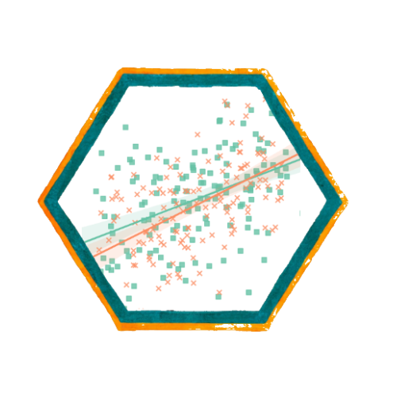
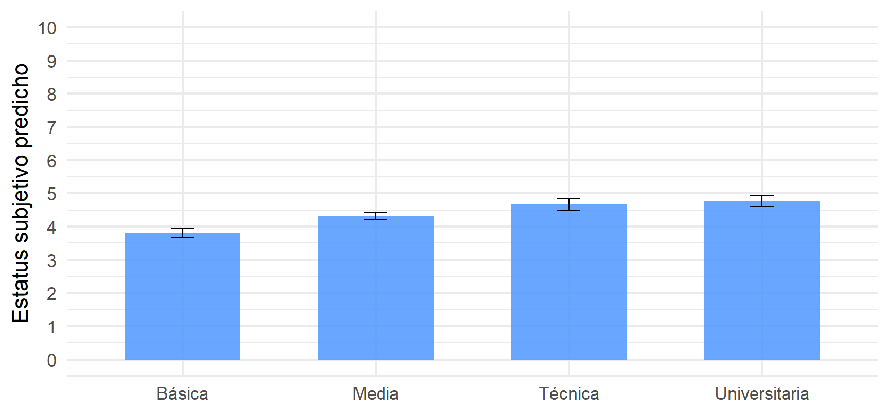

Métodos estadísticos para
Ciencias Sociales III
Kevin Carrasco
Sociología - UNAB
2do Sem 2026
https://metod3-unab.netlify.app/
Sesión 7
El problema de las variables categóricas
Variables dummy
Predictores con más de dos categorías
Valores predichos
¿Dónde quedamos?
Sabemos estimar, interpretar, evaluar el ajuste y hacer inferencia sobre un modelo de regresión
Sabemos además predecir: obtener el valor esperado de \(Y\) para un perfil determinado de características
Pero todos nuestros predictores han sido variables continuas
Repaso: escalas de medición
En la primera sesión revisamos la clasificación NOIR
| Tipo | Características | Propiedad de números | Ejemplo |
|---|---|---|---|
| Nominal | Uso de números en lugar de palabras | Identidad | Nacionalidad |
| Ordinal | Números se usan para ordenar series | + ranking | Nivel educacional |
| Intervalar | Intervalos iguales entre números | + igualdad | Temperatura |
| Razón | Cero real | + aditividad | Distancia |
Esa distinción, que hasta ahora era una advertencia teórica, hoy se vuelve un problema práctico
Lo que hemos usado hasta ahora
Nuestros predictores han sido edad (razón), ingreso (razón) y nivel educacional (ordinal, tratado como continuo)
En los tres casos, sumar una unidad tiene un significado claro: un año más, cien mil pesos más, un nivel más
¿Qué ocurre con una variable nominal, donde los números solo identifican grupos?
Hoy
¿Qué hacemos con variables que no son numéricas, como sexo, zona de residencia u ocupación?
¿Cómo se incorporan al modelo y cómo se interpretan sus coeficientes?
¿Y cuando tienen más de dos categorías?
El problema
Muchas variables sociales son categóricas
Sexo, nacionalidad, religión, zona de residencia, situación laboral, tipo de establecimiento educacional
Buena parte de las variables con que trabaja la sociología no se miden en una escala numérica
Sus valores identifican grupos, no cantidades
¿Qué pasa si las tratamos como continuas?
Supongamos una variable de zona de residencia codificada así:
| Código | Zona |
|---|---|
| 1 | Norte |
| 2 | Centro |
| 3 | Sur |
Un coeficiente de 0,4 diría: “por cada unidad adicional de zona, el estatus aumenta 0,4 puntos”
¿Qué significa “una unidad adicional de zona”?
Nada
Los números de una variable nominal son etiquetas, no cantidades
El supuesto que estaríamos imponiendo
Tratar la variable como continua supone que las categorías están ordenadas y equidistantes
Que pasar del Norte al Centro equivale exactamente a pasar del Centro al Sur
Y que el efecto es constante a lo largo de toda la escala
Ninguno de esos supuestos tiene sentido para una variable nominal
Variables dummy
La solución
Una variable dummy (o dicotómica, o binaria) toma solo dos valores: 0 y 1
El 1 indica pertenencia a una categoría, y el 0 su ausencia
No representan cantidades sino condiciones: se pertenece o no se pertenece al grupo
Un ejemplo
Partamos por el caso más simple, una variable con solo dos categorías:
| Sexo | Codificación original | Variable dummy mujer |
|---|---|---|
| Hombre | 1 | 0 |
| Mujer | 2 | 1 |
El nombre de la variable indica qué representa el valor 1. Por eso conviene llamarla mujer y no sexo
En R
Con
factor()R reconoce la variable como categórica y construye las dummy automáticamenteLa primera categoría del factor pasa a ser la de referencia
La categoría de referencia
Al codificar en 0 y 1, uno de los dos grupos queda representado por el cero
Ese grupo es la categoría de referencia: no tiene coeficiente propio, porque queda absorbido en el intercepto
Todo lo que el modelo estima se expresa en comparación con él
En nuestro ejemplo, los hombres son la referencia, y el coeficiente de
mujerresponde a la pregunta: ¿cuánto difieren las mujeres respecto de los hombres?
La categoría de referencia no desaparece del modelo
Está en el intercepto, y es el punto de comparación de todos los coeficientes
El modelo
| Estatus subjetivo | ||
|---|---|---|
| Predictores | β | std. Error |
| (Intercept) | 4.402 *** | 0.050 |
| sexo f [Mujer] | -0.127 | 0.065 |
| Observations | 2301 | |
| R2 / R2 adjusted | 0.002 / 0.001 | |
| * p<0.05 ** p<0.01 *** p<0.001 | ||
Interpretación
\[\widehat{estatus} = b_{0} + b_{1}(mujer)\]
Para un hombre, la variable vale 0: \(\widehat{Y} = b_0\)
Para una mujer, vale 1: \(\widehat{Y} = b_0 + b_1\)
Por lo tanto, \(b_1\) es la diferencia entre ambos grupos
El coeficiente de una variable dummy es una diferencia de promedios entre dos grupos
El intercepto es el promedio del grupo de referencia
Comprobémoslo
La lectura sustantiva
Las mujeres se ubican, en promedio, 0.127 puntos más abajo en la escalera social que los hombres
El coeficiente no alcanza significación estadística al 95%, de modo que la diferencia observada podría deberse al azar muestral
Note que la interpretación es la misma de siempre: cuánto cambia \(Y\) al pasar de 0 a 1, solo que aquí ese cambio significa cambiar de grupo
Más de dos categorías
El problema de las politómicas
Con dos categorías basta una dummy. ¿Y si son cuatro?
Una sola variable codificada 1, 2, 3, 4 nos devuelve al problema inicial
La solución: construir una dummy por cada categoría, menos una
Categorizando la educación
Hasta ahora tratamos el nivel educacional como una variable continua de 1 a 10. Agrupémoslo en cuatro categorías:
| Nivel educacional | N | % |
|---|---|---|
| Básica | 541 | 23.5 |
| Media | 1002 | 43.5 |
| Técnica | 371 | 16.1 |
| Universitaria | 387 | 16.8 |
La codificación
Cuatro categorías se representan con tres dummy:
| Categoría | Media |
Técnica |
Universitaria |
|---|---|---|---|
| Básica | 0 | 0 | 0 |
| Media | 1 | 0 | 0 |
| Técnica | 0 | 1 | 0 |
| Universitaria | 0 | 0 | 1 |
La categoría Básica queda identificada por tener cero en todas las demás: es la categoría de referencia
¿Por qué una menos?
Con cuatro dummy, la cuarta sería completamente redundante: conociendo las tres primeras ya sabemos a qué grupo pertenece cada caso
El modelo no podría estimarse, porque una variable sería combinación exacta de las otras
La regla general: con \(k\) categorías se incluyen \(k-1\) variables dummy
El modelo
| Estatus subjetivo | ||
|---|---|---|
| Predictores | β | std. Error |
| (Intercept) | 3.732 *** | 0.063 |
| educ cat [Media] | 0.523 *** | 0.078 |
| educ cat [Técnica] | 0.953 *** | 0.099 |
| educ cat [Universitaria] | 1.263 *** | 0.098 |
| Observations | 2301 | |
| R2 / R2 adjusted | 0.078 / 0.077 | |
| * p<0.05 ** p<0.01 *** p<0.001 | ||
Interpretación
Cada coeficiente es la diferencia respecto de la categoría de referencia, no respecto de la categoría anterior
Quienes tienen educación media se ubican 0.52 puntos más arriba que quienes tienen educación básica
Quienes tienen educación universitaria, 1.26 puntos más arriba que el grupo de educación básica
El intercepto, 3.73, es el promedio del grupo de referencia
Comprobación
Cada promedio equivale al intercepto más el coeficiente correspondiente. Por ejemplo, para educación media: 3.732 + 0.523 = 4.254
Comparaciones entre categorías
La tabla nos dice cuánto difiere cada grupo respecto de Básica
¿Y si queremos comparar Técnica con Universitaria?
La diferencia se obtiene restando ambos coeficientes: 1.263 − 0.953 = 0.31
Pero la tabla no entrega la significación de esa comparación, porque no está estimada en el modelo
Cambiar la categoría de referencia
La elección de la referencia no cambia el modelo: ni el \(R^2\), ni los valores predichos, ni las diferencias entre grupos
Solo cambia respecto de qué grupo se expresan los coeficientes
Se elige según la pregunta de investigación, o bien la categoría más numerosa o la teóricamente más relevante
El modelo completo
Con controles
| Estatus subjetivo | ||
|---|---|---|
| Predictores | β | std. Error |
| (Intercept) | 3.163 *** | 0.143 |
| sexo f [Mujer] | -0.008 | 0.062 |
| educ cat [Media] | 0.507 *** | 0.081 |
| educ cat [Técnica] | 0.863 *** | 0.104 |
| educ cat [Universitaria] | 0.970 *** | 0.112 |
| ing100 | 0.054 *** | 0.006 |
| edad | 0.007 *** | 0.002 |
| Observations | 2301 | |
| R2 / R2 adjusted | 0.112 / 0.110 | |
| * p<0.05 ** p<0.01 *** p<0.001 | ||
Interpretación conjunta
Los coeficientes de educación mantienen su lectura: diferencia respecto del grupo de educación básica, manteniendo constantes sexo, ingreso y edad
El coeficiente de sexo se reduce prácticamente a cero y sigue sin ser significativo: la diferencia bruta entre hombres y mujeres se explica por las otras variables
Los predictores continuos se interpretan como siempre
El intercepto corresponde ahora a un hombre, con educación básica, sin ingreso y de cero años: no tiene interpretación sustantiva
¿Por qué categorizar?
Continua o categórica
| Educación continua | Educación categórica | |
|---|---|---|
| Predictores | β | β |
| (Intercept) | 2.922 *** | 3.158 *** |
| educacion | 0.161 *** | |
| ing100 | 0.048 *** | 0.054 *** |
| edad | 0.006 ** | 0.007 *** |
| educ cat [Media] | 0.508 *** | |
| educ cat [Técnica] | 0.863 *** | |
| educ cat [Universitaria] | 0.970 *** | |
| Observations | 2301 | 2301 |
| R2 / R2 adjusted | 0.113 / 0.111 | 0.112 / 0.110 |
| * p<0.05 ** p<0.01 *** p<0.001 | ||
Lo que revela la versión categórica
Con la versión continua, el modelo impone que cada nivel educacional adicional aporta lo mismo
Con la versión categórica podemos ver los incrementos reales entre grupos consecutivos:
- De Básica a Media: 0.508
- De Media a Técnica: 0.355
- De Técnica a Universitaria: 0.108
Los incrementos disminuyen: el salto más grande ocurre al comienzo de la trayectoria educativa
Ese hallazgo es invisible en el modelo continuo
Categorizar permite que los datos muestren una relación no lineal
Qué se gana y qué se pierde
Se gana
- No se impone linealidad
- Permite detectar umbrales
- Interpretación intuitiva por grupos
Se pierde
- Información dentro de cada categoría
- Grados de libertad (más coeficientes)
- Parsimonia del modelo
En este caso el \(R^2\) es prácticamente idéntico en ambas versiones, de modo que el costo es bajo
Valores predichos
Con predictores categóricos
La lógica es la misma de la sesión anterior, pero ahora el resultado son valores por grupo y no una línea continua
| Nivel educacional | Predicho | IC inferior | IC superior |
|---|---|---|---|
| Básica | 3.807 | 3.654 | 3.960 |
| Media | 4.315 | 4.201 | 4.429 |
| Técnica | 4.670 | 4.503 | 4.837 |
| Universitaria | 4.777 | 4.603 | 4.952 |
El gráfico

Figure 1
Las barras de error corresponden al intervalo de confianza al 95%. El eje recorre la escala completa de la variable
Cómo leerlo
Cada barra es el estatus esperado de ese grupo educacional, con las demás variables fijadas en su promedio
Si los intervalos de confianza de dos grupos no se superponen, la diferencia entre ellos es claramente significativa
La distancia entre el grupo más bajo y el más alto es de aproximadamente un peldaño, en una escala de 0 a 10
Volvamos al ejemplo publicado
El artículo de la sesión pasada
Revista de Sociología, Universidad de Chile
Sección de resultados, desde la página 43. Variable dependiente: participación en protestas
La semana pasada quedó un cabo suelto: uno de los predictores era una variable dicotómica, y dijimos que su interpretación la veríamos más adelante
El predictor pendiente
Identificación política de izquierda (referencia: distinto de izquierda)
Es una variable dummy: vale 1 para quienes se identifican con la izquierda y 0 para el resto
Su coeficiente es positivo y significativo: quienes se identifican con la izquierda participan más en protestas que el resto
El paréntesis del nombre indica explícitamente cuál es la categoría de referencia, que es una buena práctica de reporte
Qué observar ahora
¿Cómo está construida la categoría de referencia? ¿Es un grupo homogéneo o agrupa posiciones muy distintas?
El coeficiente está estandarizado: ¿tiene sentido interpretar una desviación estándar de una variable que solo toma los valores 0 y 1?
¿Qué habría cambiado si el artículo hubiese usado la escala completa de posición política en lugar de una dicotómica?
Una advertencia sobre dicotomizar
Convertir una variable con muchas categorías en una dummy simplifica la interpretación
Pero agrupa en la referencia a personas que pueden ser muy distintas entre sí
Hasta ahora deberíamos saber
Los números de una variable categórica son etiquetas, y tratarlos como cantidades impone supuestos falsos
Una dummy toma valores 0 y 1, y su coeficiente es una diferencia de promedios entre grupos
Con \(k\) categorías se incluyen \(k-1\) dummy; la categoría omitida es la de referencia, y el intercepto corresponde a ella
Cada coeficiente compara con la referencia, no con la categoría anterior
Para la próxima sesión
Lectura: el artículo revisado hoy en la Revista de Sociología, sobre todo sección de resultados.
Wooldridge, Introducción a la econometría: secciones 3.2 y 6.3
En el práctico aplicaremos esto a un nuevo ejemplo, con la construcción de una escala de participación
Métodos estadísticos para Ciencias Sociales III
Kevin Carrasco
Sociología - UNAB
2do Sem 2026
https://metod3-unab.netlify.app/